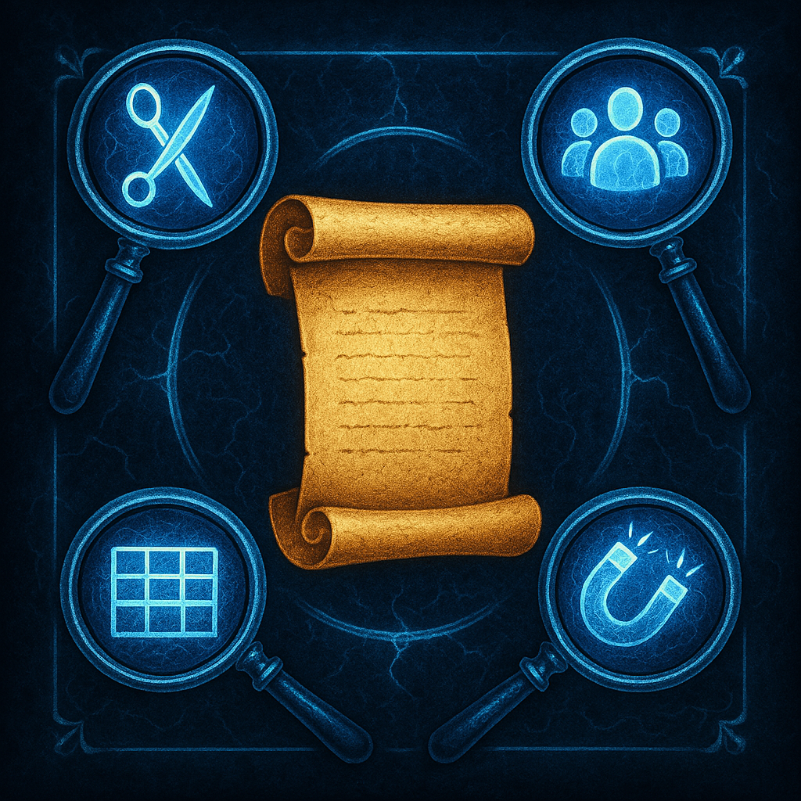

2.1: Extraindo e Resumindo Inteligência
MÓDULO 2: ANÁLISE E SÍNTESE
Afogados em Dados, Sedentos por Sabedoria
Nesta aula, você aprenderá a usar a IA como um bisturi para dissecar qualquer documento e extrair apenas o que importa.
As Lentes da Extração

Lente 1: Tipos de Resumo
O Extrativo copia os pontos-chave. O Abstrativo reescreve as ideias como um analista faria.
Lente 2: A Audiência
Um resumo para um CEO é diferente de um para um engenheiro. Defina a audiência.
Lente 3: O Formato
Peça explicitamente pela estrutura que você precisa:
tópicos, tabela, etc.
Lente 4: A Extração Específica
Use a IA como um imã para atrair dados específicos. Ex:
Extraia todos os nomes de pessoas.